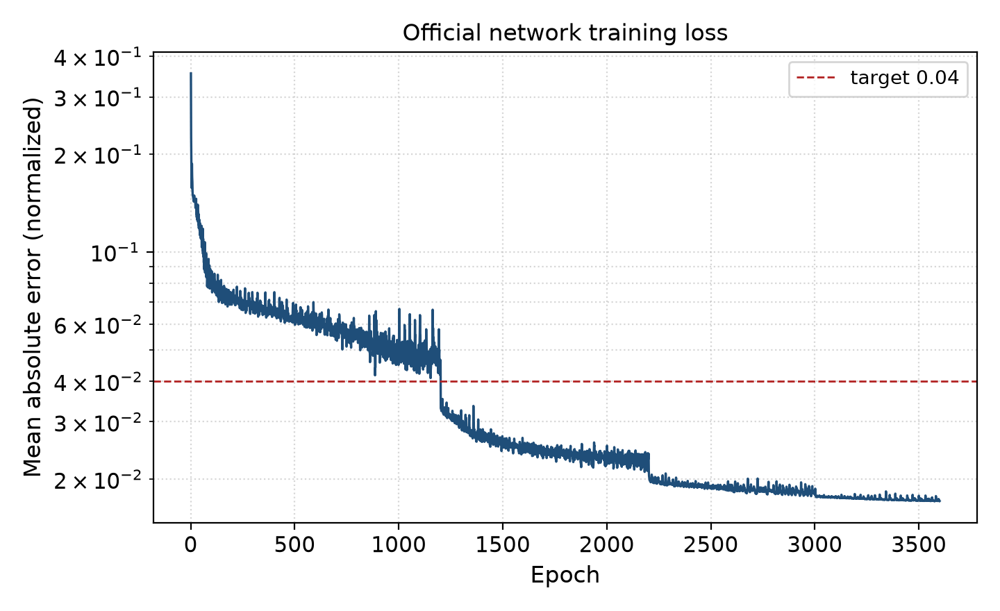

Control room · hypothesis, not an interview
Hold the turbine at 1473 K. Send a fuel setting only when the tests allow it.
This screen is for a control-room operator. That person has not been interviewed. The job assumed here is the one they do today: change the fuel flow when inlet air, solar heat, or the propane fraction moves, so the turbine inlet stays at 1473 K. The numbers come from the model in the course report. Moving a slider does not retrain it.
Reference setting
303 K · propane 0.25 · 1,500 kW
Air–fuel ratio
— —Efficiency
— % —A higher air–fuel ratio means less fuel injected for the same air. Typical efficiency error on the tests is 0.002, about 0.2 percentage points. That is an order of magnitude, not a guarantee at every point.
How the small network was checked
Eight unnamed measurements, trained two ways, plus the same starts raised by 20%. The learning-rate slider recomputes only this eight-row fit. It does not touch the turbine model.
Saved result. Move the learning rate to recompute this fit.
| Weight | Value |
|---|
Predicted output against the eight measurements.

Training trace for the turbine model in the report. The learning rate steps from 0.005 to 0.0001. The normalized error ends at 0.017. This curve is not an operating result.